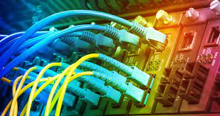
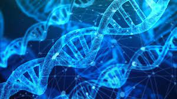

La section informatique de l’Université Cheikh Anta Diop de Dakar est un institut de formation public, privée dans les filières de l'informatique qui a ouvert ses portes depuis 1990.
Elle presente des formations telles que:
- Logiciels informatiques:
Une formation en développement logiciel est un cursus qui permet d’acquérir toutes les connaissances informatiques nécessaires à la création de logiciels et à la réalisation de projet web. Les professionnels du développement web construisent la structure informatique d’une application, d’un logiciel ou d’une page web grâce au code HTML.Une fois la formation achevée, les nouveaux professionnels du développement de logiciel peuvent exercer divers métiers tels que : Chef de projet web, Programmeur,Intégrateur,Chef de projet informatique,Architecte web,Chef de projet multimédia...
-Sécurité informatique et des réseaux : La formation en sécurité informatique a pour but de former les étudiants à combattre les cyberattaques que les entités privées et publiques subissent de manière quotidienne, bien que les personnes sont aussi victimes de cybercriminels. Une multitude de formations permettent de poursuivre jusqu’à bac+6. Par la suite, les jeunes diplômés peuvent espérer suivre une carrière dans différents métiers de l’informatique, en exerçant des professions telles que : Auditeur en sécurité des SI,Risk manager,Architecte de sécurité,Spécialiste en gestion de crise,Administrateur de base de données, Administrateur de réseau ,Analyste d’exploitation informatique,Analyste-programmeur...

-Réseaux informatiques : Il existe différentes formations en Système et Réseaux qui vont du Bac+2 et au Bac+6. Les moins longues permettent aux étudiants d’apprendre les bases du secteur, les plus longues leur donnent l’occasion de se spécialiser. Quoi qu’il en soit, les étudiants apprenant tous à maitriser les architectures réseaux de manière à pouvoir concevoir, réparer, sécuriser et améliorer les systèmes informatiques des entreprises. Quand ils entreront dans la vie active, leur rôle sera de gérer tout l'informatique d'une entreprise. Ils devront être capables de trouver des solutions à tous les problèmes que rencontrent les employés.Une fois les études terminées, vous pourrez par exemple prétendre, selon votre dernier diplôme obtenu, à des postes de :Administrateur de réseau,Responsable micro ,Technicien de maintenance en informatique,Vendeur en micro-informatique et multimédia,Ingénieur Systèmes et Réseaux
-Télécommunications: Les télécommunications représentent les technologies mises en place pour permettre aux hommes d’échanger et de recevoir des informations à distance. On imagine que ce secteur couvre un large champ de métiers différents, des techniciens ou fournisseurs de services.Une fois diplômé en télécommunications, il existe deux possibilités : Continuer ses études à un niveau supérieur ,Lancer ou poursuivre sa carrière professionnelle dans ce secteur. Le domaine des télécommunications recouvre un large corps de métiers aussi bien techniques que tournés vers la clientèle (services) ou la recherche.
-Business intelligence : La Business Intelligence (BI) est un processus technologique d'analyse des données et de présentation d'informations pour aider les dirigeants, managers et autres utilisateurs finaux de l'entreprise à prendre des décisions business éclairées. La Business Intelligence englobe une grande variété d'outils, d'applications et de méthodologies qui permettent aux organisations de collecter des données à partir de systèmes internes et de sources externes. Ces données sont ensuite préparées pour l'analyse afin de créer des rapports, tableaux de bord et et autres outils de de Data Viz pour rendre les résultats analytiques disponibles aux décideurs et aux opérations.Les jeunes diplômés peuvent intégrer des grandes entreprises. Ils ont la possibilité d’exercer plusieurs métiers liés à la stratégie d’entreprise. En voici quelques exemples : Chargé d'affaires,Growth hacker,Ingénieur commercial,Ingénieur d’affaires
-Systémes d'information: Le domaine d'activité système d'information regroupe une large variété de professions tout aussi différentes les unes des autres. En véritable professionnels de l'informatique, ils possèdent les compétences indispensables pour organiser et sécuriser la base de données de l'entreprise dans laquelle ils se trouvent.

-Bioinformatique: Le bio-informaticien est un scientifique qui a acquis une double compétence : il ou elle a les connaissances scientifiques propres aux sciences du vivant, qui correspondent souvent à sa formation de départ, mais il a aussi des connaissances pointues en informatique qui lui permettent d'exploiter les résultats de ses recherches. Le bio-informaticien ou la bio-informaticienne doit être capable de naviguer dans les données informatiques concernant la biologie et d’en extraire l’information pertinente. Il passe régulièrement d’une méthode de travail, celle du biologiste, à une autre, celle de l’informaticien.Une fois ses études finies, le bio-informaticien peut travailler dans divers secteurs : les biotechnologies, en recherche et production, dans un laboratoire de recherche public ou privé, un laboratoire d’analyses ou de contrôle, un groupe industriel agrochimique ou pharmaceutique, etc.